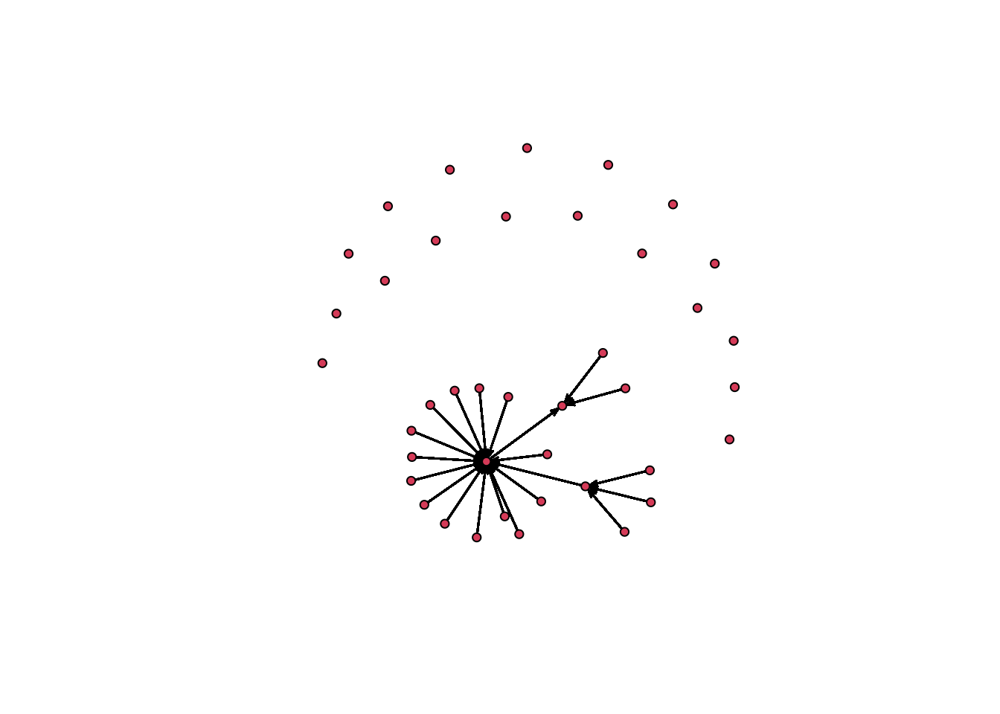
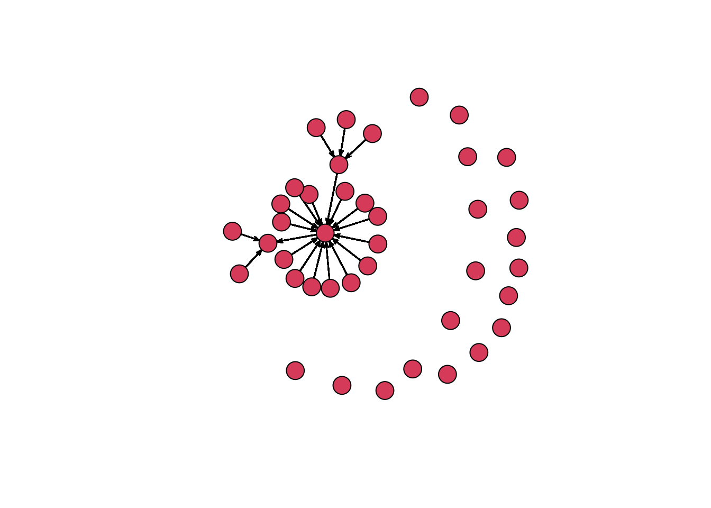
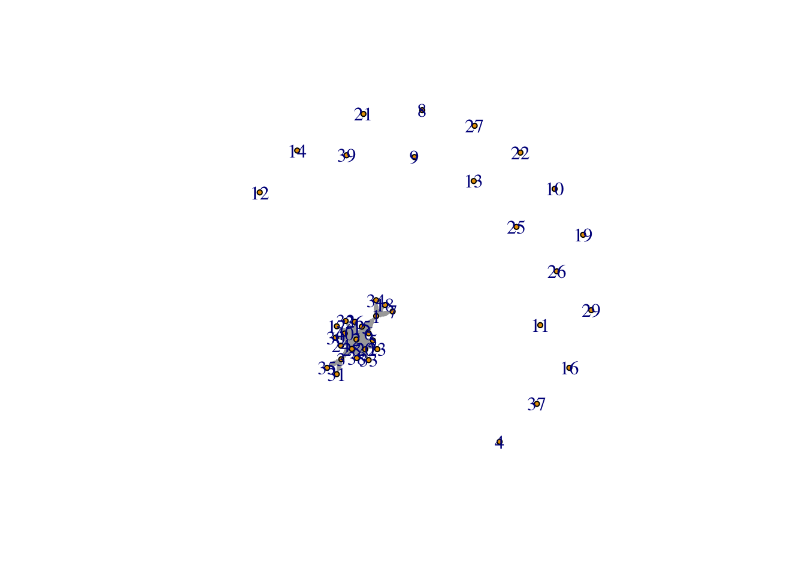
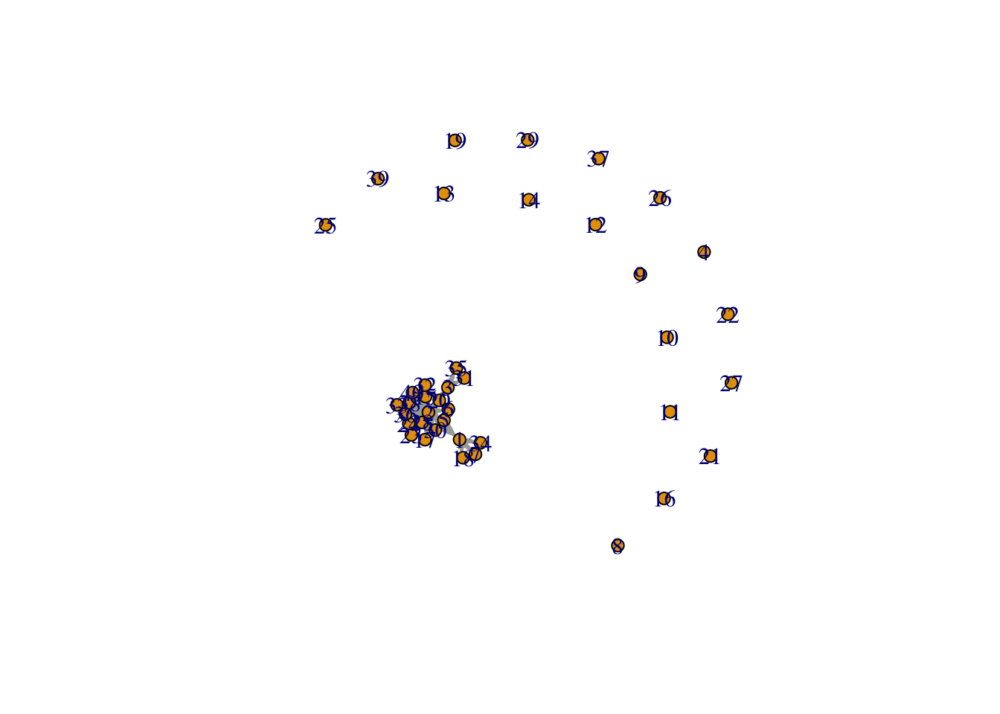
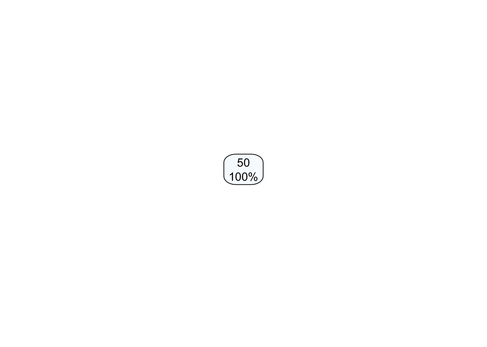

Here, we conduct a network analysis of our class (BDS 516: Spring 2021). The data we use was obtained in a survey which asks each class member about their interactions with other class members.
People may select from a list of options for each name.
The options for each name are as follows:
I have texted in the last 7 days
I have met during my time in MBDS
Is my friend
I ask for advice/help
Asks me for help/advice
There is also a question that asks about one’s own degree of introversion. The options are as follows:
Introverted
Middle ground
Extroverted
There are 22 people in our sample. Using this data, we examine a number of questions. First, we wish to measure the centrality of the class; the extent to which there are a small number of people around whom the social network is consolidated. Second, we want to know whether introverts tend towards the periphery of these networks and extroverts toward the center.
We load all non-native packages and the Excel spreadsheet as a dataframe.
library(readxl)
library(network)
library(igraph)
library(tidyverse)
library(rpart)
library(rpart.plot)
library(caret)
library(htmltools)
library(kableExtra)
hw10<- read_excel("hw10.xlsx")
node<- read_excel("hw10.xlsx", skip = 1)
colnames(node) <- c("ID", 1:40, "trait") #create the edge list
edge_prep <- node %>% pivot_longer(col = -c(ID, trait), names_to = "in-tie", values_to = "value") %>%
rename (`out-tie` = ID)
edgelist <- separate_rows(edge_prep, value, sep =",") %>%
rename (`tie-type` = value)
as.character(edgelist$`tie-type`)
edgelist$`tie-type`[is.na(edgelist$`tie-type`)] = 0 #NA values for tie-type to 0
edgelist <- na.omit(edgelist)
edgelist <- edgelist %>%
arrange(`out-tie`) %>%
filter(`out-tie` != `in-tie`)
##there are 3 variables in the edge list: out-tie, in-tie, and tie.
#creating nodelist
inclass <- subset(node, select = -c(2:41) )
inclass <- na.omit(inclass)
absent_people <- tibble (ID= c(3,4,8,9,10,11,12,13,14,16,19,21,22,25,26,27,29,37,39), trait = NA) #people who didnt take the survey
nodelist <-rbind (inclass, absent_people) %>% arrange(`ID`) #combine people took the survey and people didn't take the survey#edgelist head
edgelist %>% head()## # A tibble: 6 x 4
## `out-tie` trait `in-tie` `tie-type`
## <dbl> <dbl> <chr> <chr>
## 1 1 2 2 2
## 2 1 2 3 0
## 3 1 2 4 0
## 4 1 2 5 0
## 5 1 2 6 2
## 6 1 2 7 0#nodelist head
nodelist %>% head()## # A tibble: 6 x 2
## ID trait
## <dbl> <dbl>
## 1 1 2
## 2 2 3
## 3 3 NA
## 4 4 NA
## 5 5 2
## 6 6 2Looking at the information centrality, tie type 4 (I ask for advice/help) has the greatest centralization while tie type 5 (Asks me for help/advice). Between-ness is also another measure of centrality that shows us how well-connected the parts are. In terms of between-ness, tie type 3 (Is my friend ) ranks the highest and tie type 2 (I have met during my time in MBDS) is the lowest. Likewise, tie type 3 also ranks the highest for reciprocity, though tie type 4 ranks the lowest. As for closeness, tie type 2 ranks the closest and tie type 3 is the least closest.
Tie type 1 (I have texted in the last 7 days) generates the most similar network in terms of introversion, while tie type 3 generates the most dissimilar.
classnormsnet <- network(edgelist, vertex.attr = nodelist, matrix.type = "edgelist", ignore.eval = FALSE)
cat(head(capture.output(print(summary(classnormsnet))), 44), sep="\n")## Network attributes:
## vertices = 40
## directed = TRUE
## hyper = FALSE
## loops = FALSE
## multiple = FALSE
## bipartite = FALSE
## total edges = 1246
## missing edges = 0
## non-missing edges = 1246
## density = 0.7987179
##
## Vertex attributes:
##
## ID:
## numeric valued attribute
## attribute summary:
## Min. 1st Qu. Median Mean 3rd Qu. Max.
## 1.00 10.75 20.50 20.50 30.25 40.00
##
## trait:
## numeric valued attribute
## attribute summary:
## Min. 1st Qu. Median Mean 3rd Qu. Max. NA's
## 1 2 2 2 2 3 19
## vertex.names:
## character valued attribute
## 40 valid vertex names
##
## Edge attributes:
##
## in-tie:
## character valued attribute
## attribute summary:
## the 10 most common values are:
## 18 5 6 28 2 31 29 22 19 34
## 53 50 48 47 44 43 42 41 38 38
##
## tie-type:
## character valued attribute
## attribute summary:
## 0 1 2 3 4 5
## 551 143 133 131 176 112plot(classnormsnet, vertex.cex = 1) # very dense 
plot(classnormsnet, vertex.cex = 3)
# graphing the network
network_class <- graph_from_data_frame(d = edgelist, vertices = nodelist, directed = TRUE)
plot(network_class, edge.arrow.size = 0.1, vertex.size = 3)
plot(network_class, edge.arrow.size = 0.1, vertex.size = 6)
Edgelist based on Tie-Type
# edgelist based on tie-type, nodelist based on trait
edgelist1 <- edgelist %>% filter(`tie-type` == 1)
edgelist2 <- edgelist %>% filter(`tie-type` == 2)
edgelist3 <- edgelist %>% filter(`tie-type` == 3)
edgelist4 <- edgelist %>% filter(`tie-type` == 4)
edgelist5 <- edgelist %>% filter(`tie-type` == 5)
network_class_tietype1 <- graph_from_data_frame(d = edgelist1, vertices = nodelist, directed = TRUE)
network_class_tietype2 <- graph_from_data_frame(d = edgelist2, vertices = nodelist, directed = TRUE)
network_class_tietype3 <- graph_from_data_frame(d = edgelist3, vertices = nodelist, directed = TRUE)
network_class_tietype4 <- graph_from_data_frame(d = edgelist4, vertices = nodelist, directed = TRUE)
network_class_tietype5 <- graph_from_data_frame(d = edgelist5, vertices = nodelist, directed = TRUE)Density Density is the number of ties relative to the number of possible ties
From greatest to least, the rank of tie types in terms of density is as follows:
types <-
c("Type 1", "Type 2", "Type 3", "Type 4", "Type 5")
contents <-
c("I have texted in the last 7 days","I have met during my time in MBDS","Is my friend","I ask for advice/help","Asks me for help/advice")
cbind(types, contents) %>%
as.data.frame() -> initial
# density based on tie type
round(c(edge_density(network_class_tietype1, loops = F),
edge_density(network_class_tietype2, loops = F),
edge_density(network_class_tietype3, loops = F),
edge_density(network_class_tietype4, loops = F),
edge_density(network_class_tietype5, loops = F)), 2) ->
densityvals
initial %>%
cbind(densityvals) %>% arrange(desc(densityvals)) %>%
kbl(booktabs = T) %>% kable_styling() %>% HTML()| types | contents | densityvals |
|---|---|---|
| Type 4 | I ask for advice/help | 0.11 |
| Type 1 | I have texted in the last 7 days | 0.09 |
| Type 2 | I have met during my time in MBDS | 0.09 |
| Type 3 | Is my friend | 0.08 |
| Type 5 | Asks me for help/advice | 0.07 |
Diameter
# Diameter
round(c(diameter(network_class_tietype1, directed=F, weights=NA),
diameter(network_class_tietype2, directed=F, weights=NA),
diameter(network_class_tietype3, directed=F, weights=NA),
diameter(network_class_tietype4, directed=F, weights=NA),
diameter(network_class_tietype5, directed=F, weights=NA)), 2) ->
diametervals
initial %>% cbind(diametervals) %>% arrange(desc(diametervals)) %>%
kbl(booktabs = T) %>% kable_styling() %>% HTML()| types | contents | diametervals |
|---|---|---|
| Type 1 | I have texted in the last 7 days | 4 |
| Type 2 | I have met during my time in MBDS | 4 |
| Type 3 | Is my friend | 4 |
| Type 4 | I ask for advice/help | 4 |
| Type 5 | Asks me for help/advice | 3 |
Closeness
Closeness measures how close people are to everyone else. We multiply the values obtained by 1000 so that fewer digits can be displayed in our table. We show the types in order of closest to least close.
#calculating closeness
round(c(mean(closeness(network_class_tietype1, mode="all", weights=NA)),
mean(closeness(network_class_tietype2, mode="all", weights=NA)),
mean(closeness(network_class_tietype3, mode="all", weights=NA)),
mean(closeness(network_class_tietype4, mode="all", weights=NA)),
mean(closeness(network_class_tietype5, mode="all", weights=NA))), 7)*1000 ->
closenessvals
initial %>% cbind(closenessvals) %>% arrange(desc(closenessvals)) %>%
kbl(booktabs = T) %>% kable_styling() %>% HTML()| types | contents | closenessvals |
|---|---|---|
| Type 1 | I have texted in the last 7 days | 0.9560 |
| Type 3 | Is my friend | 0.9560 |
| Type 4 | I ask for advice/help | 0.9131 |
| Type 2 | I have met during my time in MBDS | 0.8753 |
| Type 5 | Asks me for help/advice | 0.7702 |
Betweenness
Betweenness is the shortest paths between nodes that go through a given node
From most betweenness to least betweenness, the rank of ties in terms of betweenness is as follows:
round(c(mean(betweenness(network_class_tietype1, directed=F, weights=NA)),
mean(betweenness(network_class_tietype2, directed=F, weights=NA)),
mean(betweenness(network_class_tietype3, directed=F, weights=NA)),
mean(betweenness(network_class_tietype4, directed=F, weights=NA)),
mean(betweenness(network_class_tietype5, directed=F, weights=NA))), 2) ->
betweennessvals
initial %>% cbind(betweennessvals) %>% arrange(desc(betweennessvals)) %>%
kbl(booktabs = T) %>% kable_styling() %>% HTML()| types | contents | betweennessvals |
|---|---|---|
| Type 1 | I have texted in the last 7 days | 6.80 |
| Type 3 | Is my friend | 6.80 |
| Type 4 | I ask for advice/help | 6.20 |
| Type 2 | I have met during my time in MBDS | 5.63 |
| Type 5 | Asks me for help/advice | 2.90 |
Degree
Degree looks at the number of ties in a network
From greatest to least, the rank of tie types in terms of degree is as follows:
round(c(mean(degree(network_class_tietype1, mode="all")),
mean(degree(network_class_tietype2, mode="all")),
mean(degree(network_class_tietype3, mode="all")),
mean(degree(network_class_tietype4, mode="all")),
mean(degree(network_class_tietype5, mode="all"))), 2) ->
degreevals
initial %>% cbind(degreevals) %>% arrange(desc(degreevals)) %>%
kbl(booktabs = T) %>% kable_styling() %>% HTML()| types | contents | degreevals |
|---|---|---|
| Type 4 | I ask for advice/help | 8.80 |
| Type 1 | I have texted in the last 7 days | 7.15 |
| Type 2 | I have met during my time in MBDS | 6.65 |
| Type 3 | Is my friend | 6.55 |
| Type 5 | Asks me for help/advice | 5.60 |
Centrality Degree
Information Centrality is the number of all paths between nodes that go through a given node
From greatest centralization to least centralization, the rank of tie types is as follows:
round(c(centr_degree(network_class_tietype1, mode="in", normalized=T)$centralization,
centr_degree(network_class_tietype2, mode="in", normalized=T)$centralization,
centr_degree(network_class_tietype3, mode="in", normalized=T)$centralization,
centr_degree(network_class_tietype4, mode="in", normalized=T)$centralization,
centr_degree(network_class_tietype5, mode="in", normalized=T)$centralization), 2) ->
centr_vals
initial %>% cbind(centr_vals) %>% arrange(desc(centr_vals)) %>%
kbl(booktabs = T) %>% kable_styling() %>% HTML()| types | contents | centr_vals |
|---|---|---|
| Type 4 | I ask for advice/help | 2.91 |
| Type 1 | I have texted in the last 7 days | 2.37 |
| Type 3 | Is my friend | 2.07 |
| Type 2 | I have met during my time in MBDS | 1.89 |
| Type 5 | Asks me for help/advice | 1.72 |
Mean Distance
The mean distance between nodes, in order from least to greatest, is as follows:
Is my friend (tie type 3)
I ask for advice/help (tie type 4)
I have met during my time in MBDS (tie type 2)
I have texted in the last 7 days (tie type 1)
Asks me for help/advice (tie type 5)
round(c(mean_distance(network_class_tietype1, directed=T),
mean_distance(network_class_tietype2, directed=T),
mean_distance(network_class_tietype3, directed=T),
mean_distance(network_class_tietype4, directed=T),
mean_distance(network_class_tietype5, directed=T)), 3) ->
mean_distances
initial %>% cbind(mean_distances) %>% arrange(desc(mean_distances)) %>%
kbl(booktabs = T) %>%
kable_styling() %>% HTML()| types | contents | mean_distances |
|---|---|---|
| Type 2 | I have met during my time in MBDS | 1.583 |
| Type 4 | I ask for advice/help | 1.579 |
| Type 1 | I have texted in the last 7 days | 1.575 |
| Type 3 | Is my friend | 1.575 |
| Type 5 | Asks me for help/advice | 1.393 |
In terms of introversion:
Most similar network: “I have texted in the last 7 days”
Most dissimilar network: “I have met during my time in MBDS”
node <- nodelist
node[is.na(node)] <- -1
net <- graph_from_data_frame(d = edgelist, vertices = node, directed = TRUE)
net1 <- graph_from_data_frame(d = edgelist1, vertices = node, directed = TRUE)
net2 <- graph_from_data_frame(d = edgelist2, vertices = node, directed = TRUE)
net3 <- graph_from_data_frame(d = edgelist3, vertices = node, directed = TRUE)
net4 <- graph_from_data_frame(d = edgelist4, vertices = node, directed = TRUE)
net5 <- graph_from_data_frame(d = edgelist5, vertices = node, directed = TRUE)
#filter edgelist for all 5 tie types...then calculate this measure for 5 networks and see which is most similar / dissimialr
#Similarity
round(c(assortativity(net1, V(net1)$trait, directed=T),
assortativity(net2, V(net2)$trait, directed=T),
assortativity(net3, V(net3)$trait, directed=T),
assortativity(net4, V(net4)$trait, directed=T),
assortativity(net5, V(net5)$trait, directed=T)),3) ->
assortativity_vals
initial %>% cbind(assortativity_vals) %>% arrange(desc(assortativity_vals)) %>%
kbl(booktabs = T) %>% kable_styling() %>% HTML()| types | contents | assortativity_vals |
|---|---|---|
| Type 1 | I have texted in the last 7 days | -0.582 |
| Type 5 | Asks me for help/advice | -0.605 |
| Type 4 | I ask for advice/help | -0.620 |
| Type 3 | Is my friend | -0.657 |
| Type 2 | I have met during my time in MBDS | -0.669 |
We use both a decision tree and regression to examine if introverts tend to be at the periphery while extraverts are in the center of the network. The input is the trait (level of introvert/extravert) and the output is the degree/betweenness.
Both the decision tree models are unable to predict any patterns. The regression model also does not show any significance. We suspect that the small sample size is our limitation. We conclude that trait introversion/extroversion does not predict where introverts and extroverts are in the network.
#decision tree: betweenness and trait
tree_bt <- nodelist %>% mutate (between = betweenness(network_class, directed=F, weights=NA))
model_tree_bt <- rpart(between ~ as.factor(trait), method = "anova", data = tree_bt, cp = 0.00001)
rpart.plot(model_tree_bt)#decision tree: degree and trait
tree_dg <- nodelist %>% mutate (degree = degree(network_class, mode="in"))
model_tree_dg <- rpart(degree ~ as.factor(trait), method = "anova", data = tree_dg, cp = 0.00001)
rpart.plot(model_tree_dg)
#regression: bewteenness and trait
summary(lm(between ~ as.factor(trait), data = tree_bt))##
## Call:
## lm(formula = between ~ as.factor(trait), data = tree_bt)
##
## Residuals:
## Min 1Q Median 3Q Max
## -67.0 -3.8 -3.8 -3.8 134.0
##
## Coefficients:
## Estimate Std. Error t value Pr(>|t|)
## (Intercept) 2.868e-14 2.356e+01 0.000 1.0000
## as.factor(trait)2 3.800e+00 2.581e+01 0.147 0.8846
## as.factor(trait)3 6.700e+01 3.331e+01 2.011 0.0595 .
## ---
## Signif. codes: 0 '***' 0.001 '**' 0.01 '*' 0.05 '.' 0.1 ' ' 1
##
## Residual standard error: 40.8 on 18 degrees of freedom
## (19 observations deleted due to missingness)
## Multiple R-squared: 0.2597, Adjusted R-squared: 0.1775
## F-statistic: 3.158 on 2 and 18 DF, p-value: 0.06676We found that in this class there are certain people who are very socially connected—some more central than others—and others who are entirely socially disconnected from others in this class. Those who were most likely to ask others for advice/help, texted others recently, and considers those they communicate with to be friends are the most socially connected, and those who tend to be asked for advice are near the outskirts by all available measures.
The ties that are most similar in terms of introversion/extroversion are those that involved texting in the past seven days, and those that are the most dissimilar were those that indicated having met through the MBDS program.
Using the two methods we employed (decision tree and linear regression), we didn’t find a statistically significant relationship between being introverted and being at the exterior/periphery of the network.
Q1: Kim Nguyen
Q2: Ryan Karbowicz & Ammar Plumber
Q3: Elaina Lin & Meghan Aines